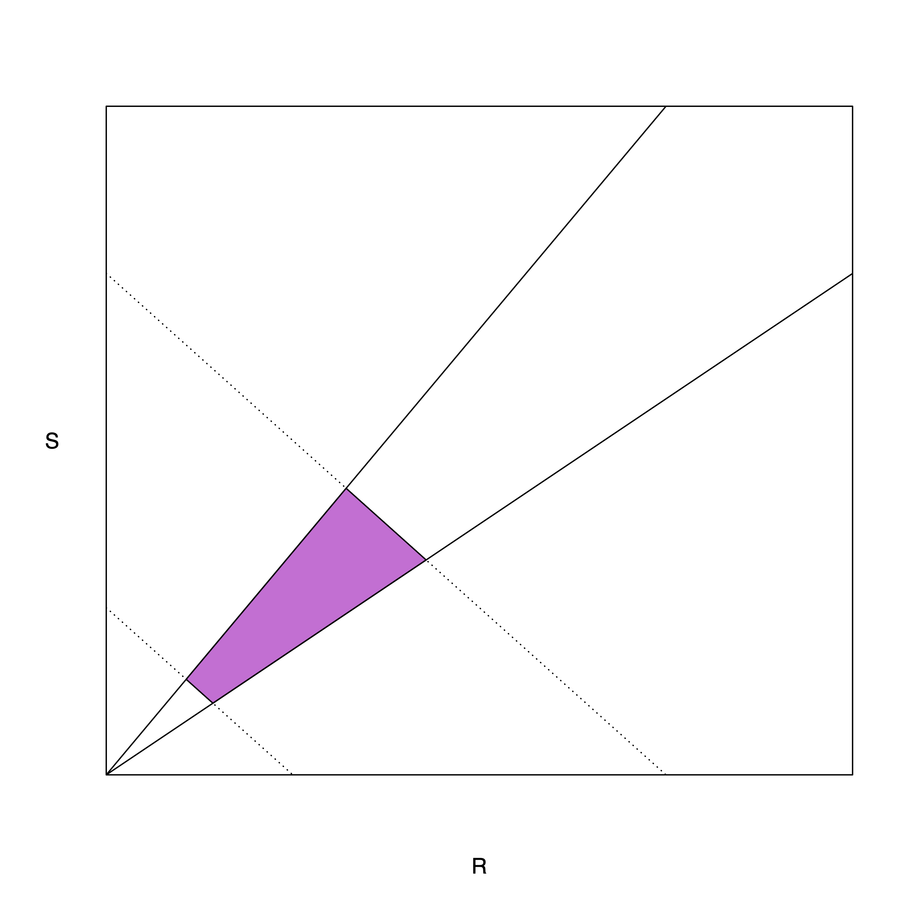

I am recently back from the annual meeting of the American Association of Biological Anthropologists (AABA). Back in my first blogging period, I always liked to do meeting recaps, and this seems like a good tradition for Monkey’s Uncle 2.0.
A few years back, I made an executive decision that I would just attend AABA on an annual basis. It can be very, very difficult to find a conference where you feel totally comfortable when your research is highly interdisciplinary. I’ve tried many—American Anthropological Association, Population Association of America, Sunbelt Social Networks, Ecology and Evolution of Infectious Disease, Evolution and Human Behavior, Evolutionary Demography, Trop Med—and none really fits quite right. AABA really doesn’t fit especially well either, but it has a number of virtues that distinguish it from every other conference. First, I know lots of people there. While I don’t have a specific posse to hang with, I have lots of friends and colleagues I can count on seeing and, let’s face it, catching up with people is the primary purpose of attending conferences. Second, I really love AABA as an institution. Attending the annual meetings is a bargain, especially compared to the total waste of time and money that is AAA. More importantly, AABA has prioritized making the society diverse and welcoming for a broad community of people, as a society that is dedicated to the scientific study of human diversity should. I find the vibe at AABA just better than most other conferences.
LA was a nice location—I ate at several lovely food trucks as well as at the Grand Central Market—for the meeting, though I must admit that the venue seemed a bit fancy for AABA standards.
Undermining Race Science
This year, Charles Roseman and I organized an invited symposium entitled, Undermining the Production of Race Science. We had a fantastic lineup of speakers, covering fields from quantitative genetics, to genomics, to the ecology of inter-group interactions, to the evolutionary psychology of judgement of risk and responsibility, to the basic (but fundamental) question of what do we mean when we use the word “group”? In addition to Charles and me, speakers included Robin Nelson (ASU), Adam Van Arsdale (Wellseley), Sheela Arthreya (TAMU), Clark Barrett (UCLA), Anne Pisor (WSU), Chelsea Cataldo-Ramirez (UC Davis), Ed Hagen (WSU), Kevin Bird (UC Davis), Fernando Villanea (Colorado), and Rebecca Sear (LSTHM). We also had two great discussants, Tina Lasisi (Michigan) and Rick Bribiescas (Yale), who helped us all process all the information.
It’s hard to overstate what a fantastic group of speakers we had. Everyone did their homework and showed up with—and delivered—an outstanding presentation. I learned a lot.
AABA has an outstanding statement on race and racism that really lays out the broad outlines of the problems with race as an analytical category. Charles and I took a somewhat more technical tack on things. Our respective specialties are fairly formal (quantitative genetics and the evolution of life histories) and we see great value in formalizing evolutionary hypotheses in general, with the obvious application here to so-called “race science.” For example, if the hypothesis is that selection on intelligence has worked at the group level, you need to be able to show that there is a well-defined (i.e., not tautological) between-group variance on which, you know, selection can work! That is, after all, the way selection works. In his talk, which had the amazing title of “Do the Math or Someone Else Will Do It To You,” Charles noted that there isn’t.
Or maybe you posit that there are continental/racial differences in timing of first birth, total fertility, parental investment, etc. as a result of trade-offs arising from energetic budget constraints. What is your fitness measure/have you specified an objective function? Obviously, you haven’t actually measured fitness (that would be asking an awful lot). Have you accounted for the actual energetic budget that produces the hypothesized trade-offs? Are you confusing trade-offs with constraints? Are the specified trade-offs even measurable?
Many of the talks in our session had this same abductive quality to them: if some racist hypothesis were true, what would it entail from the actual science regarding genome banks, or admixture, or polygenic risk scores, gene regulatory networks, inter-group interactions, etc. Turns out, more often than not, it would entail impossible states of the world or at least states that are inconsistent with other core ideas in science.
Another theme that we emphasized was that we may fall back on idea that our science is being “misused,” but we might inadvertently be abetting race science through some of our less-examined conventions.
Our symposium received a nice write-up in Science last week.
I’ll end with a plot that I showed from one of the classics in the theory of life histories (van Noordwijk and De Jong 1986). They famously showed that life-history traits that theoretically trade off (and therefore, should be negatively correlated) can actually be positively correlated, depending on the magnitude of variance in available energy vs. allocation. A theory that depends on the existence of an unmeasurable trade-off is not a very good scientific theory.

Linking to TESCREAL
My talk focused on some technical elements in formal theories of life-history evolution, some of which I discussed in a 2021 commentary in EHB with Daniel Promislow. However, I closed by linking race science to a broader intellectual movement dubbed TESCREAL by Timnit Gebru and Émile Torres. The acronym stands for Transhumanism, Extropianism, Singularitarianism, Cosmism, Rationalism, Effective Altruism, Longtermism. This is clearly material for another post, so I will just point the interested reader to a nice explainer that Émile wrote last year. Various elements of the TESCREAL movement have been linked to scientific racism and general white supremacy. In principle, the people in these movements care about science and rationality (the “R” in the acronym does stand for Rationalism, after all). As specialists in the various tools and theories that get appropriated by race scientists, we need to put in the effort to show how weak race science really is.
In his General Theory, John Maynard Keynes (1936: 96) wrote that “Practical men, who believe themselves to be quite exempt from any intellectual influences, are usually the slaves of some defunct economist. Madmen in authority, who hear voices in the air, are distilling their frenzy from some academic scribbler of a few years back.” I think that we can amend this to include self-styled free thinkers, whose brave speech somehow always manages to converge on old-fashioned prejudice, disparaging marginal groups and justifying their marginalization, are really just slaves to the hateful ideas of Lothrop Stoddard, Carleton Coon, and their hateful peers repackaged for the AI era.